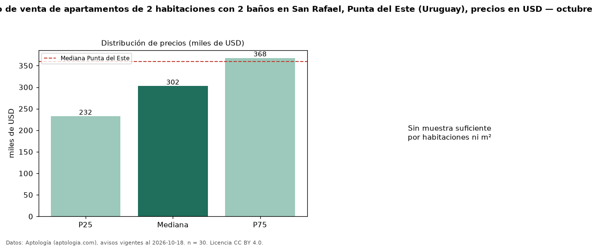

Precio de venta de apartamentos de 2 habitaciones con 2 baños en San Rafael, Punta del Este (Uruguay), precios en USD — octubre 2026
USD 302.500 es el precio mediano de apartamentos de 2 habitaciones con 2 baños en venta en San Rafael, Punta del Este (Uruguay) (n = 30 avisos). Frente a la mediana de los apartamentos de 2 habitaciones en venta de San Rafael (USD 263.500, n = 42), queda 15 % por encima; este segmento reúne el 71 % de esos avisos. La mediana de todos los apartamentos en venta de Punta del Este es USD 360.000 (−16 % de diferencia). La mitad central de los avisos va de USD 232.500 a USD 367.788 (razón 1,6), una dispersión moderada. Datos: Aptología (aptologia.com), CC BY 4.0 — https://www.aptologia.com/uy/venta/punta-del-este. Archivos: PDF, CSV con las cifras y gráfica PNG.

| Avisos únicos | 30 |
|---|---|
| Percentil 25 | COP 232.500 |
| Mediana | COP 302.500 |
| Percentil 75 | COP 367.788 |
Fuente: avisos vigentes de portales inmobiliarios recopilados por Aptología, deduplicados (mínimo 30 avisos únicos por celda). Precios pedidos, no cerrados. Fecha: 2026-10-18.